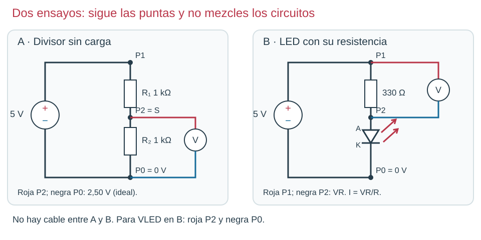

Contenido
Dos ensayos independientes
En el primero comprobamos el reparto de tensión de un divisor sin carga. En el segundo alimentamos un LED con su propia resistencia. No conectamos el LED a S: eso alteraría el primer ensayo. Material: 5 V regulados, dos resistencias de 1 kΩ, 330 Ω, LED rojo, protoboard y multímetro.

Circuito A: divisor

- Predice: corriente = 5/2000 = 2,5 mA; salida = 2,5 V.
- Sin alimentar, conecta + → R₁ → S → R₂ → negativo. Marca P1 en +, P2 en S y P0 en negativo.
- Configura V ⎓. Mide P1–P0: alimentación real. Roja P2, negra P0: salida. Roja P1, negra P2: caída en R₁.
- Comprueba que las dos caídas suman aproximadamente la alimentación.
- Desconecta antes de retirar este circuito o construir el otro en una zona separada.
Circuito B: LED

- Sin alimentar, conecta + → 330 Ω → A del LED; K → negativo.
- Revisa polaridad y alimenta. Mide la fuente entre P1/P0, la resistencia entre P1/P2 y el LED entre P2/P0.
- Calcula la corriente de la rama a partir de VR/R. Así no tienes que abrirla para insertar el amperímetro.
- Desconecta al finalizar.
Un registro que permite interpretar
| Ensayo | Predicción | Dato ilustrativo, NO medida real | Interpretación |
|---|---|---|---|
| A · salida | 2,50 V | Fuente 4,96 V; S = 2,46 V | Con fuente real, referencia 2,48 V; revisar tolerancias y contacto. |
| B · corriente | 9,09 mA con VLED = 2 V | VR = 2,94 V; R medida = 328 Ω | I = 2,94/328 = 0,00896 A = 8,96 mA. |
Si el LED no enciende, comprueba fuente, A/K y nodos con la alimentación retirada antes de cambiar cables. Si la corriente calculada parece mil veces excesiva, revisa A/mA y Ω/kΩ. Una discrepancia pequeña puede proceder de tolerancias o caída real del LED; una salida de 0 V en el divisor exige revisar primero dónde están las puntas.
Ahora tú: explica antes de comprobar
En el circuito B mides fuente = 5,02 V y LED = 1,94 V. ¿Qué caída esperas en la resistencia? Calcula I con 330 Ω.
Solución razonada, sin cronómetro
VR = 5,02−1,94 = 3,08 V; I = 3,08/330 = 0,00933 A = 9,33 mA. Puedes contrastar midiendo directamente P1–P2.
Aplicación autónoma · apartado 6.1
Entrega esquema de cada circuito, puntos de medida, predicción y tabla propia con unidades. Explica una discrepancia y qué comprobación la apoya. La ficha del equipo debe distinguir que se han ensayado los dos circuitos.
Comprueba y razona
Interpreta, decide y explica
Responde antes de abrir la explicación. Sin cronómetro; usa Tab y Entrar para desplegarla.
¿Puedes unir el LED al nodo S y seguir llamando al primer ensayo divisor sin carga?
Ver razonamiento
No. La nueva rama absorbe corriente y cambia el reparto. El ensayo LED debe usar su circuito independiente.
Mides 3,06 V en 330 Ω. ¿Cuál es I?
Ver razonamiento
3,06/330 = 0,00927 A = 9,27 mA. El dato usado es la caída sobre la resistencia, no sobre el LED.